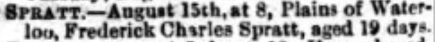

Frederick Charles Spratt 1917 - 1917
[ Home ] | [ Calendar ] | [ Surnames Index ] | [ Errors ] | [ Family History ]The child of Herbert Spratt (a hotel manager) and Ethel Challis (a hotel manageress), Frederick Spratt, the second cousin once-removed on the father's side of Nigel Horne, was born in Thanet, Kent, England in Jul 19171.
He died on 15 Aug 1917 at 8 Plains of Waterloo, Ramsgate, Kent, England2.
Parents
- Herbert Jesse was born on 16 Aug 1894
- Ethel Lucy was born on 21 May 1891
Citations
- England & Wales births 1837-2006 - Findmypast
- England & Wales deaths 1837-2007 - Findmypast
Media
Thanet Advertiser 18 Aug 1917

England & Wales births 1837-2006 - BMD/B/1917/3/AZ/001124/011
England & Wales deaths 1837-2007 - BMD/D/1917/3/AZ/000746/115
Family Tree

Map
Generated by ged2site. Last updated on Jul 3, 2024